PLUi, réseaux d'eau et d'assainissement en Classe A, énergie, mobilité : à l'échelle intercommunale, la donnée doit être harmonisée entre les communes aux pratiques différentes. Notre rôle : produire un référentiel unique, aux standards nationaux, que chaque commune membre peut réutiliser.
Un EPCI hérite de la donnée produite par des dizaines de communes, avec des niveaux de qualité et des formats hétérogènes. Notre travail consiste à structurer cette donnée en un référentiel commun, conforme aux standards du CNIG et de l'IGN, tout en gardant la traçabilité de chaque source.
Objectif : un SIG intercommunal qui sert à la fois la planification stratégique et le quotidien des communes membres.
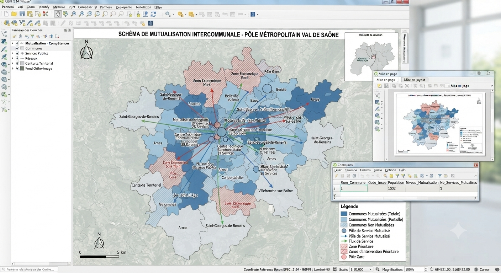
Le PLUi et le SCoT engagent l'ensemble des communes membres : leur non-conformité bloque toutes les autorisations d'urbanisme du territoire.
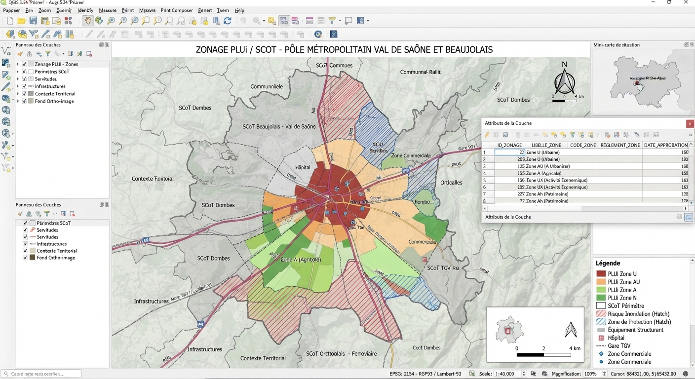
Harmonisation des données d'urbanisme de dizaines de communes au standard national CNIG.
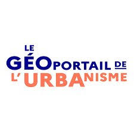
Téléversement du PLUi/SCoT numérisé pour le rendre exécutoire et opposable à l'ensemble du territoire.
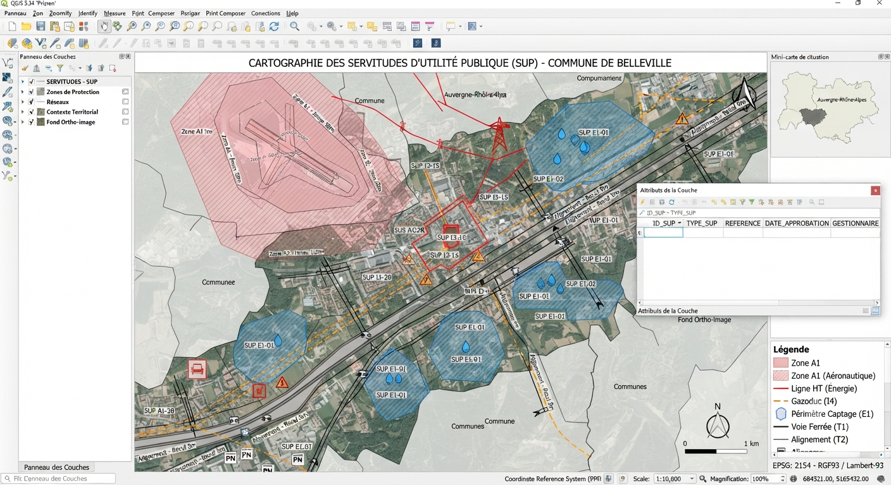
Intégration des servitudes (lignes haute tension, sites classés, abords de monuments historiques) portées à connaissance par l'État.
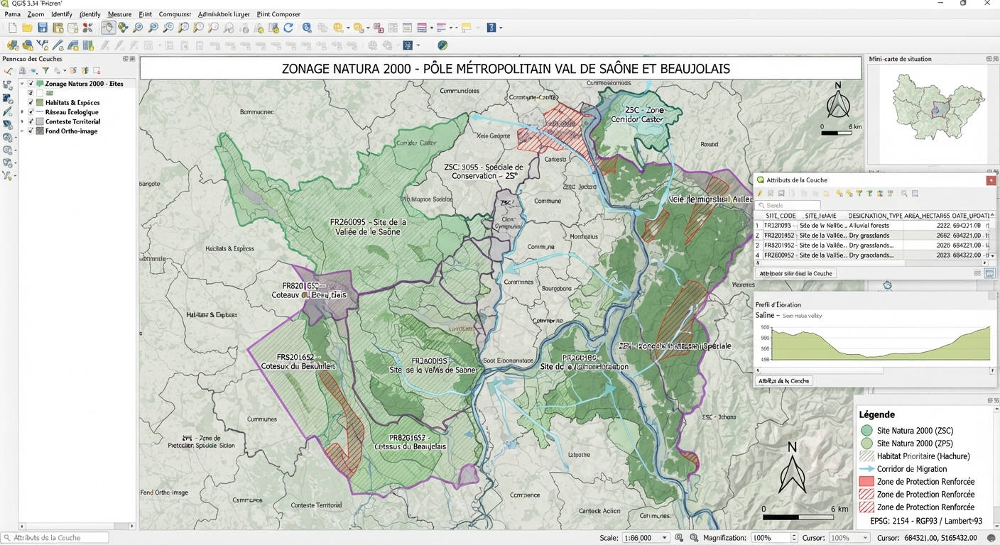
Cartographie des zones à intégrer dans les documents d'urbanisme et à soumettre à évaluation environnementale.
La réforme anti-endommagement impose une précision cartographique que seul un relevé de terrain rigoureux peut garantir.

Fond de plan topographique unique à très haute précision, socle commun à tous les exploitants de réseaux du territoire.
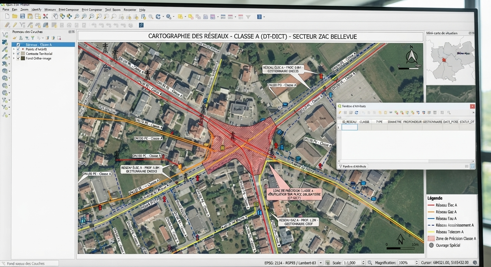
Cartographie de précision (moins de 40 cm) de tous vos réseaux de fluides, pour éviter les accidents lors des chantiers tiers.
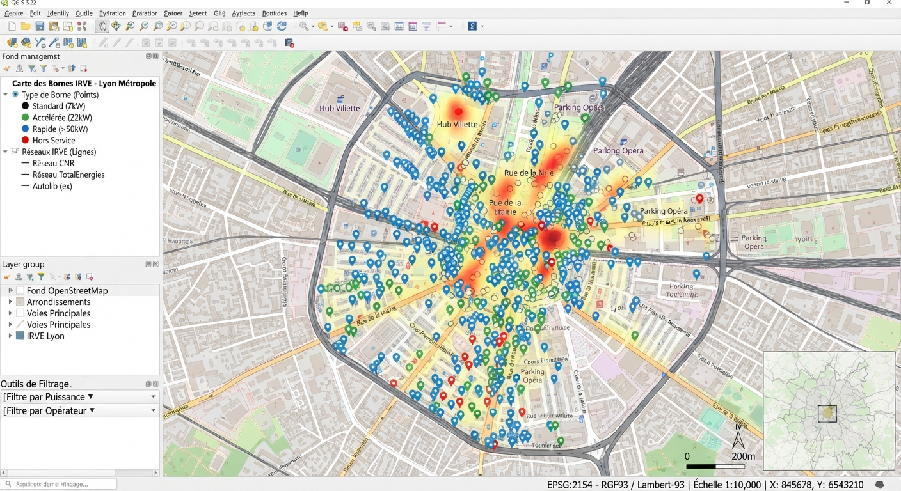
Cartographie et publication des données géolocalisées des infrastructures de recharge pour véhicules électriques.
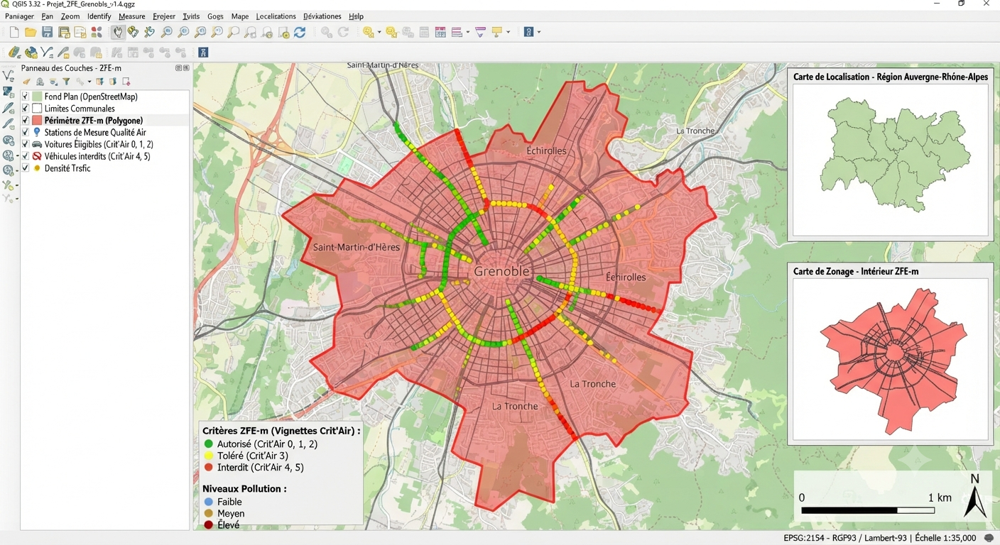
Cartographie précise du périmètre d'exclusion des véhicules polluants pour les agglomérations concernées.
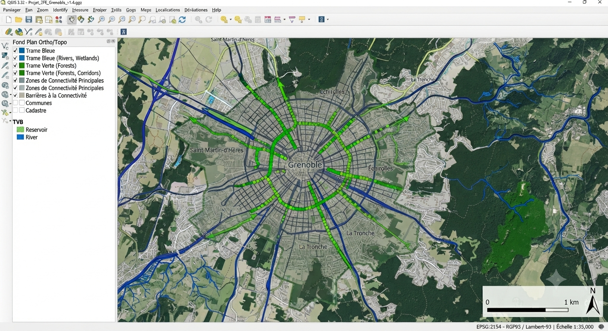
Identification des réservoirs de biodiversité et corridors écologiques à intégrer aux documents d'urbanisme.
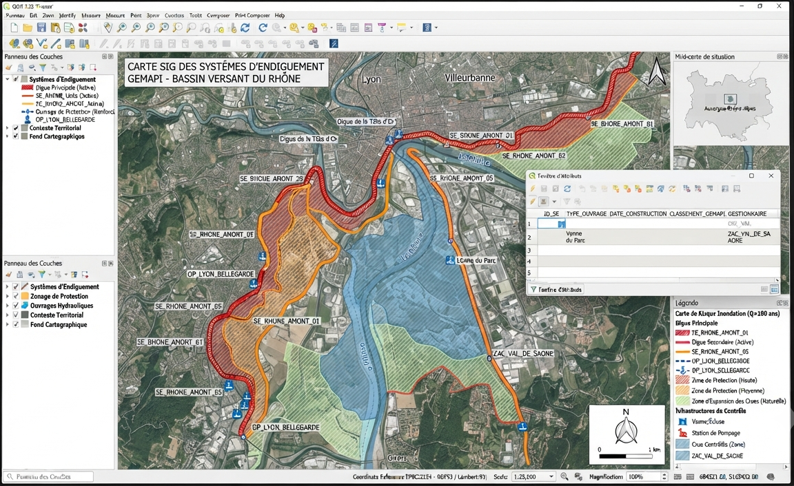
Cartographie des ouvrages de protection contre les inondations et des zones protégées associées.
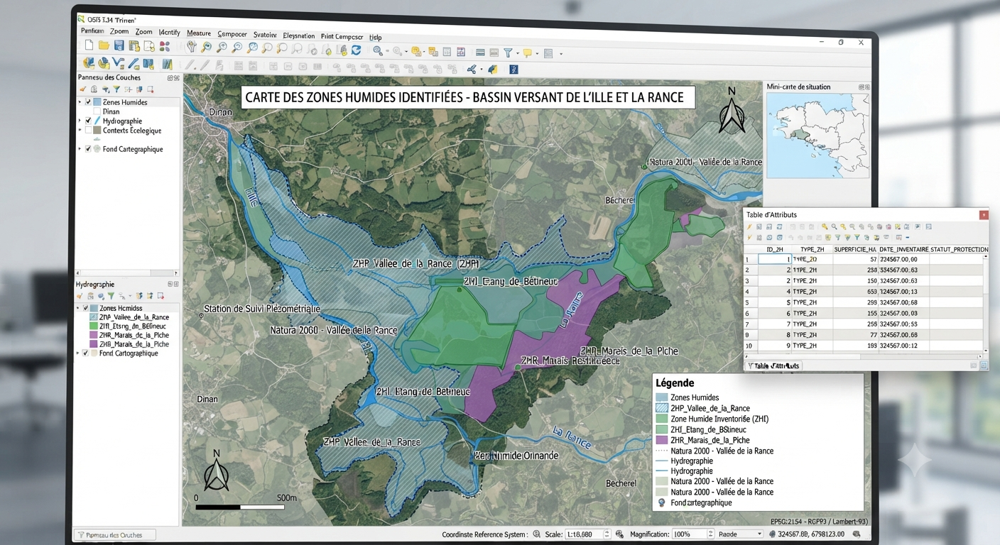
Identification cartographique nécessaire à toute autorisation d'urbanisme ou d'aménagement à proximité.
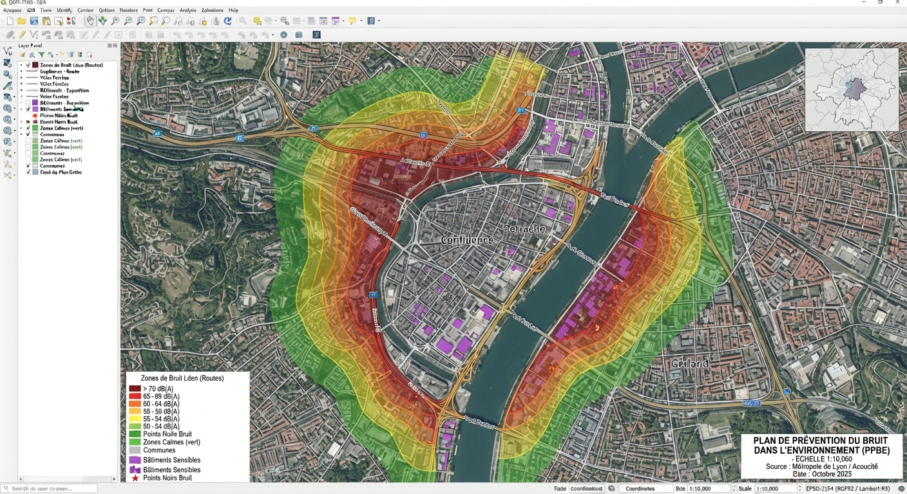
Cartographie des zones d'exposition au bruit le long des infrastructures de transport majeures du territoire.
Diffusion Web-SIG (Lizmap/QField) partagée entre l'EPCI et les communes membres, conforme à la directive INSPIRE : chaque commune consulte, filtre et exporte la donnée du territoire depuis un même portail, sans double saisie.
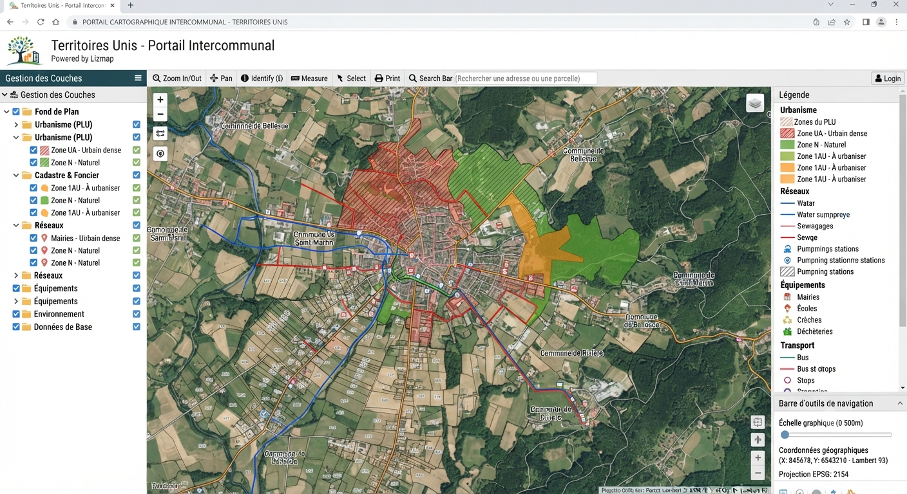
Décrivez votre territoire, nous vous proposons une méthode de mutualisation adaptée.